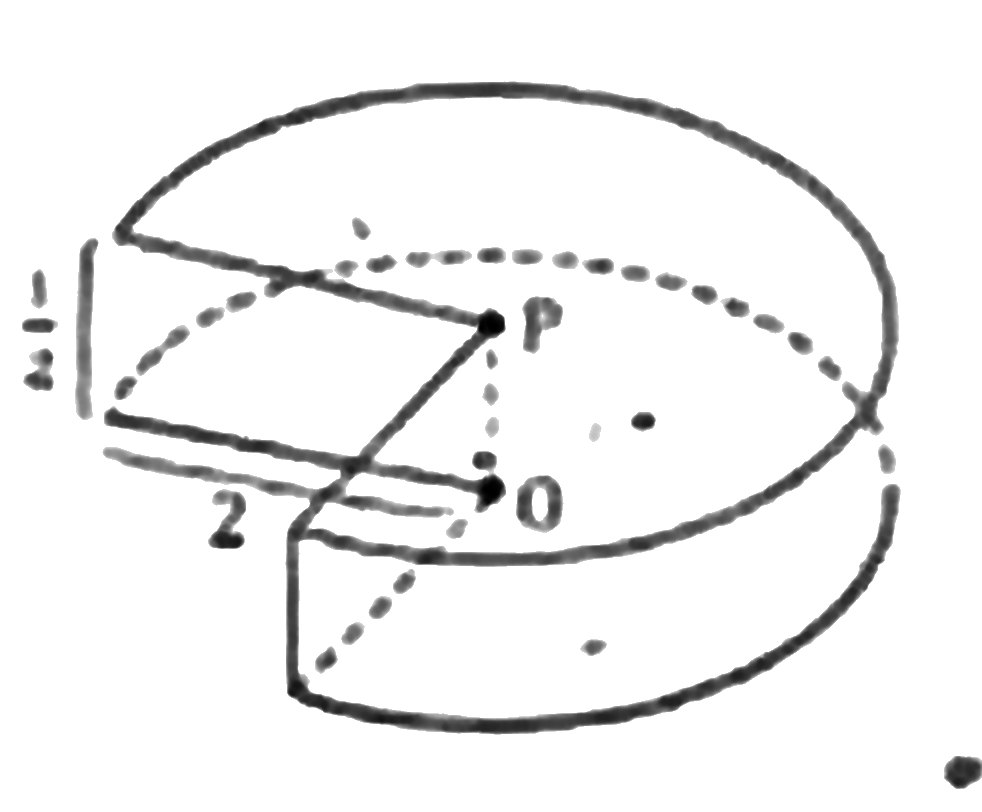
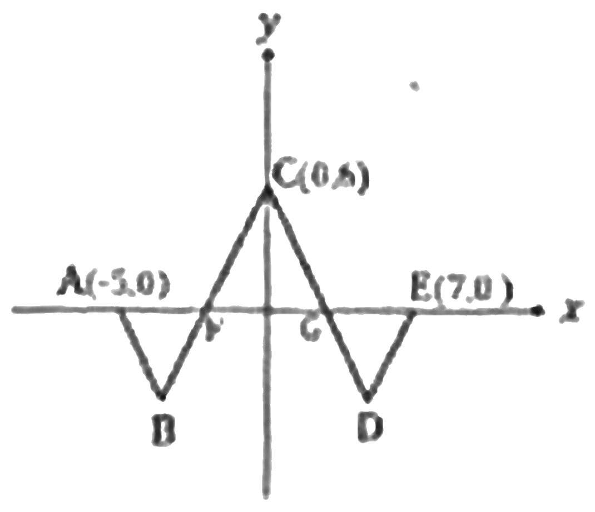

נתון: x + 36,254,980 = 77,777,777
מהי ספרת האלפים של x?

אופק, עידן, איתי ודקל הם ארבעה חברים שרכשו קובייה זהה. הקובייה מורכבת מ־27 קוביות קטנות הזהות זו לזו.
אופק הוציא מהקובייה שלו את הקובייה המסומנת ב־1. עידן הוציא את הקובייה המסומנת ב־2. איתי הוציא את הקובייה המסומנת ב־3. דקל הוציא את הקובייה המסומנת ב־4.
שטח הפנים החדש של הקובייה של ___ הוא הגדול ביותר, ושטח הפנים החדש של הקובייה של ___ הוא הקטן ביותר.
ליונתן שני שקים ובכל אחד מהם קובייה אחת הוגנת. על הקובייה הראשונה מופיעות האותיות של המילה "בהצלחה" (אות אחת על כל פאה). על הקובייה השנייה מופיעות האותיות של המילה "בבחינה" (אות אחת על כל פאה). יונתן בוחר שק באקראי ואז מוציא את הקובייה ומטיל אותה.
מה הסיכוי שתוצאת ההטלה של יונתן היא האות ב'?

מגליל שגובהו ½ ס"מ ורדיוסו 2 ס"מ הוציאו פרוסה בת 120°. P ו־O הם מרכזי המעגלים המהווים את בסיסי הגליל. לפי נתונים אלו ונתוני הסרטוט, מה שטח הפנים של הגוף שלפניכם (בסמ"ר)?
לחברת אחזקות 20 משרדים אותם הם משכירים בשכירות חודשית של 2000 שקלים למשרד אחד. במהלך השנה 3 משרדים נזקקו לשיפוץ נרחב שארך 3 חודשים, ו־2 משרדים נוספים נזקקו לשיפוץ נרחב שארך חודש וחצי. במהלך חודשי השיפוץ המשרדים לא הושכרו.
אם המשרדים היו מושכרים במשך כל חודשי השנה (ללא שיפוצים), כמה מהם היו דרושים כדי להגיע למספר הכולל של חודשי ההשכרה ש־20 המשרדים השכרו בפועל?
צינור מילא 80% מבריכה אחת ועוד 40% מהבריכה השנייה. בסה"כ מילא הצינור 22 מ"ק מתוך 40 מ"ק. כמה מ"ק מכילה הבריכה השנייה?

בסרטוט שלפניכם מערכת צירים בה הועברו 3 ישרים. המשולשים GED ו־AFB חופפים. נתון: AF = FG = GE. סכום שטחי המשולשים GDE, FCG ו־ABF הוא 24 סמ"ר.
לאור נתונים אלו ונתוני הסרטוט, מה מהבאים יכול להיות שיעורי הנקודה B?
a ו־b הם שברים חיוביים. נתון: ab = 6
איזו מבין הטענות הבאות נכונה בהכרח?

בסרטוט שלפניכם מעגל שמרכזו O ורדיוסו R ס"מ.
על פי נתונים אלו והנתונים שבסרטוט, מה סכום אורכי הקשתות המודגשות?
משפחה בת 5 נפשות (אבא, אמא, שתי בנות ובן) ממתינה בתור למגלשת מים. האם לא מוכנה לגלוש ראשונה במגלשה, והאחיות דורשות להתגלש יחדיו (אחת אחרי השנייה).
בכמה דרכים שונות יכולה המשפחה להסתדר לצורך גלישה במגלשת המים?